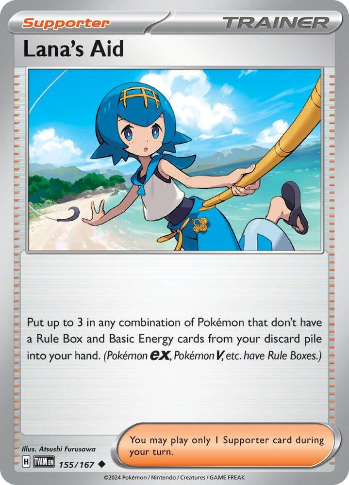

x4
x4 x3
x3 x3
x3 x4
x4
 x2
x2


 x4
x4 x2
x2![Boss's Orders [Ghetsis]](./assets/654453_bosss-orders-ghetsis.jpg) x3
x3

 x2
x2 x3
x3 x4
x4 x3
x3 x2
x2

 x2
x2 x6
x6 x5
x5 Xero's Phantom Tax
Xero's Phantom Tax 

Two Megas split one toll booth · the Phantom Toll rebuild, tuned on the TCG Live ladder · v3.1
← back to all decksPhantom Toll is v2. The Live list that played the most games ran 21 Pokémon on 7 Basics, 14 Energy with no way to recover any of it, 16 Supporters against 9 Items, and no Switch. Every complaint from those games traces to one of those four numbers.
| What the games showed | The list that showed it | v3 |
|---|---|---|
| Gastly-only openers, mulligans, a turn lost swapping Litwick in | 7 Basics, one of them a Fire Litwick | 10 Basics. Four Psychic Litwick, four 70 HP Gastly, Munkidori, Fezandipiti ex. |
| Energy arrives one card a turn and dies with the Mega | 14 Energy, 2 Telepathic, nothing that recovers a discard | 11 basic Energy plus 3 Wondrous Patch, Janine's Secret Art, Crispin, and Night Stretcher. |
| A Mega Chandelure goes down and the second one is not ready | no rebuild plan | Patch puts the dead Mega's Energy straight onto the next one; game plan 5 is the timetable. |
| Stranded Actives | Prime Catcher was the only switch | 2 Switch and Prime Catcher. |
| Dead Supporters in hand, thin draw | 16 Supporters, 3 draw cards | 11 Supporters, 15 Items, 4 Lillie's, and a Fezandipiti ex that draws 3 every time a body falls. |
| Gengar ex as the second attacker | 1 Gengar ex,  for 160 and 2 Prizes for 160 and 2 Prizes | 1 single-prize Gengar. for up to 160, gives up 0 Prizes to an ex, and comes back to hand. |
| Phantom Maze lands 50 short | no Gravity Gemstone | 1 Gravity Gemstone. |
| Froslass rooms pick off benched Basics | no answer | Battle Cage stops every counter from landing on the Bench; Munkidori moves back the ones that land on the Active; every Basic that Poffin fetches is 70 HP. |
| N's Castle turned the toll off and the deck had no answer | no Stadium | 2 Battle Cage. Any Stadium of yours discards theirs, and this one also shuts Phantom Dive and Freezing Shroud out of your Bench. |
| Energy in the discard fed N's Darmanitan's Back Draft | 1 Night Stretcher | Lana's Aid. Three cards out of the discard per play instead of one. |
Four findings shaped this 60, and each one is checkable.
The number one deck on the ladder retreats for four. Per Limitless online play in August 2026, Mega Excadrill ex is the most-played deck at 7.7% of 34,788 players. It retreats for 4 and has 340 HP. One Binding Flame makes that 5, and Phantom Maze does 380. The full retreat sheet for the field is in The Toll Math; it comes from the pokemontcg.io card data, because the local pool snapshot strips Retreat Cost.
Standard has exactly four ways to raise the opponent's Retreat Cost. A sweep of the legal pool finds Binding Flame, Ariados's Big Net, Gravity Gemstone, and Rillaboom's Drum Beating. Gemstone is the only Trainer, it stacks with every Flame, and it costs about twenty cents. It is in the 60 now.
Nothing legal attaches two Darkness to one Pokémon, and only one Item attaches Psychic in bulk. The same sweep, for every card that puts this deck's colors on the board faster than one a turn:
| Card | Color | What it does | In the 60 |
|---|---|---|---|
| Wondrous Patch | P | Item. A Basic Psychic Energy from the discard onto a Benched Psychic Pokémon. Any number per turn. | 3 |
| Janine's Secret Art | D | Supporter. A Basic Darkness from the deck onto each of up to 2 Darkness Pokémon, one each. | 1 |
| Lana's Aid | both | Supporter. Up to 3 non-Rule-Box Pokémon and basic Energy from the discard to hand. | 1 |
| Crispin | both | Supporter. Two basic Energy of different types from the deck; attach one, keep one. | tune option |
| Night Stretcher | both | Item. A Pokémon or a basic Energy from the discard to hand, Megas included. | tune option |
| Void Gale | both | Mega Gengar's own attack ferries any Energy it carries to the Bench. | built in |
| Rosa's Encouragement | both | Supporter. Two basic Energy from the discard onto a Stage 2, only while you have more Prizes left. | tune option |
| Neo Upper Energy | both | ACE SPEC. Two Energy of every type on a Stage 2. Costs the Prime Catcher seat. | skip |
| Mesprit, Cresselia, Deoxys, Okidogi ex | P or D | Attacks that charge themselves or one target from hand or deck. Each one costs the attack for the turn. | no |
| Marnie's Grimmsnarl ex, Team Rocket's Energy | D, P/D | Attach in bulk, and only to their own brand. | no |
Every deck needs a Stadium, and this one has a good reason for the one it picked. Standard holds 26 Stadiums. Most are brand-locked or symmetric in the wrong direction here: Gravity Mountain takes 30 HP off every Stage 2, which is both Megas; Jamming Tower turns off the Gemstone; Mystery Garden draws for Psychic boards, which is also Slowking's and Alakazam's boards. Battle Cage costs this deck nothing it uses and stops the two things that were killing benched Litwicks on Live: Freezing Shroud's Checkup counters and the six Phantom Dive puts on your Bench. Two copies rather than one plus a second Stadium, because the deck that beat v3 runs more than one Castle, and a same-name Stadium is the only kind you can always play over theirs. The one Pokémon that discards a Stadium in this deck's colors is Eternatus, whose Shatter costs and the attack for the turn; a second Battle Cage is cheaper.
Community Chandelure lists agree on the plumbing. The Mega Chandelure lists posted in July 2026 (TrustYourPilot's profile, the PokéBeach thread, Deltia's guide) run Wondrous Patch, Gravity Gemstone, Switch, and a Journey Together Grimmsnarl line whose Shadowy Knot reads the toll at 50 per  for one Prize. This deck takes the first three and spends the Grimmsnarl seats on the Gengar line; the Grimmsnarl is a third Stage 2 in a deck that already runs two.
for one Prize. This deck takes the first three and spends the Grimmsnarl seats on the Gengar line; the Grimmsnarl is a third Stage 2 in a deck that already runs two.
x4x3x3x4x2x4x2x3
x2x3x4x3x2x2x6x5Pokémon (20)
| Qty | Card | Set | Number | Reg |
|---|---|---|---|---|
| 4 | Litwick | Pitch Black | 036 | J |
| 3 | Lampent | Pitch Black | 037 | J |
| 3 | Mega Chandelure ex | Pitch Black | 038 | J |
| 4 | Gastly | Phantasmal Flames | 054 | I |
| 1 | Haunter | Perfect Order | 049 | J |
| 2 | Mega Gengar ex | Phantasmal Flames | 056 | I |
| 1 | Gengar | Perfect Order | 050 | J |
| 1 | Munkidori | Twilight Masquerade | 095 | H |
| 1 | Fezandipiti ex | Shrouded Fable | 038 | H |
Trainers — Supporters (11)
| Qty | Card | Set | Number | Reg |
|---|---|---|---|---|
| 4 | Lillie's Determination | Mega Evolution | 119 | I |
| 2 | Dawn | Phantasmal Flames | 087 | I |
| 3 | Boss's Orders [Ghetsis] | Mega Evolution | 114 | I |
| 1 | Janine's Secret Art | Shrouded Fable | 059 | H |
| 1 | Lana's Aid | Twilight Masquerade | 155 | H |
Trainers — Items (15)
| Qty | Card | Set | Number | Reg |
|---|---|---|---|---|
| 2 | Ultra Ball | Mega Evolution | 131 | I |
| 3 | Buddy-Buddy Poffin | Temporal Forces | 144 | H |
| 4 | Rare Candy | Mega Evolution | 125 | I |
| 3 | Wondrous Patch | Phantasmal Flames | 094 | I |
| 2 | Switch | Mega Evolution | 130 | I |
| 1 | Prime Catcher | Temporal Forces | 157 | H |
Trainers — Tool & Stadium (3)
| Qty | Card | Set | Number | Reg |
|---|---|---|---|---|
| 1 | Gravity Gemstone | Stellar Crown | 137 | H |
| 2 | Battle Cage | Phantasmal Flames | 085 | I |
Energy (11)
| Qty | Card | Set | Number | Reg |
|---|---|---|---|---|
| 6 | Basic Psychic Energy | Mega Evolution Energies | 005 | - |
| 5 | Basic Darkness Energy | Mega Evolution Energies | 007 | - |
20 + 11 + 15 + 3 + 11 = 60. ✓
Basics: 10 (4 Litwick, 4 Gastly, Munkidori, Fezandipiti ex), which is a 26% mulligan rate. The Live list ran 7 and mulliganed two games in five. Test and Tune has the eleventh Basic ready if it still stings. Litwick and Gastly both sit at 70 HP, so Poffin fetches either pair; Munkidori and Fezandipiti are Ultra Ball and Dawn targets.
The same 60 in the TCG Live import format:
Pokémon: 20
4 Litwick PBL 36
3 Lampent PBL 37
3 Mega Chandelure ex PBL 38
4 Gastly PFL 54
1 Haunter POR 49
2 Mega Gengar ex PFL 56
1 Gengar POR 50
1 Munkidori TWM 95
1 Fezandipiti ex SFA 38
Trainer: 29
4 Lillie's Determination MEG 119
2 Dawn PFL 87
3 Boss's Orders MEG 114
1 Janine's Secret Art SFA 59
1 Lana's Aid TWM 155
2 Ultra Ball MEG 131
3 Buddy-Buddy Poffin TEF 144
4 Rare Candy MEG 125
3 Wondrous Patch PFL 94
2 Switch MEG 130
1 Prime Catcher TEF 157
1 Gravity Gemstone SCR 137
2 Battle Cage PFL 85
Energy: 11
6 Basic {P} Energy MEE 5
5 Basic {D} Energy MEE 7


 PsychicDarkness ×2
PsychicDarkness ×2 Fighting -301
Fighting -301 legal (Reg J)Will-O-Wisp (20)
legal (Reg J)Will-O-Wisp (20)The Basic the deck stands on, and the only Psychic Litwick ever printed. Four copies now, all Pitch Black; the Live list carried a White Flare Litwick as its third, and a Fire body cannot pay Will-O-Wisp's or Spreading Light's after it evolves. 70 HP keeps it inside Poffin range. Going second, Will-O-Wisp for 20 is a real turn-one attack, and it is the turn that sets up the turn-two Candy.

 PsychicDarkness ×2Fighting -301legal (Reg J)Spreading Light - Search your deck for up to 3 Lampent and put them onto your Bench. Then, shuffle your deck.
PsychicDarkness ×2Fighting -301legal (Reg J)Spreading Light - Search your deck for up to 3 Lampent and put them onto your Bench. Then, shuffle your deck.Spreading Light schedules the Megas. Search your deck for up to 3 Lampent and bench them, and each one is a Mega Chandelure next turn with no Rare Candy spent. Three copies rather than four, so the fetch caps at 2 in practice. That is the right number now: with Munkidori and a Fezandipiti on the Bench, two Lampent fill the last seats and a third would have nowhere to sit.
 PsychicDarkness ×2Fighting -302legal (Reg J)Phantom Maze (130+) - This attack does 50 more damage for each Retreat Cost.
PsychicDarkness ×2Fighting -302legal (Reg J)Phantom Maze (130+) - This attack does 50 more damage for each Retreat Cost.Stage 2 from Lampent. Gives up 3 Prize cards. 350 HP, Retreat 2, Resistance to Fighting, and a Darkness Weakness the other half of this deck exists to cover.
Binding Flame needs no Energy and works from the Bench; every retreat the opponent pays costs one more, and every Phantom Maze hits 50 harder. It stacks. Two in play is plus 2 and plus 100, settled by the official Pitch Black strategy article. Phantom Maze itself does 130 plus 50 for each in the opponent's Active Pokémon's Retreat Cost, and The Toll Math is the full menu, including what the current field pays. Two on the board is the number; the third copy is the rebuild, not a resident.

 DarknessFighting ×21legal (Reg I)Petty Grudge (10)
DarknessFighting ×21legal (Reg I)Petty Grudge (10)The bottom of the Gengar line, and the Phantasmal Flames print on purpose. The Live list ran the Temporal Forces Gastly at 60 HP; this one has 70, which is one more counter for a Munkidori to find and the difference between dying to two Adrena-Brain moves and surviving them. Petty Grudge is a guaranteed 10 for . It is Darkness, so Janine's Secret Art can feed it and Concealment prices it at zero.

 DarknessFighting ×21legal (Reg J)Haunt - Place 3 damage counters on your opponent's Active Pokémon.
DarknessFighting ×21legal (Reg J)Haunt - Place 3 damage counters on your opponent's Active Pokémon.Haunt places 3 damage counters for one Energy, and placed counters ignore Weakness and Resistance. One copy, because four Rare Candy carry the Gengar line and this is the insurance for the game where the Candy is prized or already spent. Janine's Secret Art charges it from the deck; a Haunter with a Darkness on it is 30 a turn while the Candy waits, and the Energy rides the evolution up.
 DarknessFighting ×22legal (Reg I)Void Gale (230) - Move an Energy from this Pokémon to 1 of your Benched Pokémon.
DarknessFighting ×22legal (Reg I)Void Gale (230) - Move an Energy from this Pokémon to 1 of your Benched Pokémon.Stage 2 from Haunter. Gives up 3 Prizes, and discounts everyone else's. Shadowy Concealment takes 1 Prize off every Knock Out an opposing Pokémon ex scores on your Darkness Pokémon: Gastly, Haunter, and Gengar pay 0, Fezandipiti pays 1, and the Mega itself pays 2. The Psychic half gets no discount, which is exactly why the Dark wall is the cheaper wall to lose.
Void Gale is 230 for , then move an Energy from this Pokémon to 1 of your Benched Pokémon. The move is mandatory, so read it as a ferry schedule, not a bonus. It is also the deck's only type-blind accelerator: the Energy it moves can be the Psychic you attached as its third, landing on a Lampent that evolves next turn, or a Darkness landing on the Munkidori that turns Adrena-Brain on. Two copies, because it is the second wall and the ferry, never the plan. Game plan 3 is the timetable.
 DarknessFighting ×21legal (Reg J)Mind Jack (10+) - This attack does 30 more damage for each of your opponent's Benched Pokémon.
DarknessFighting ×21legal (Reg J)Mind Jack (10+) - This attack does 30 more damage for each of your opponent's Benched Pokémon.The second attacker the Live games asked for, and it was already in the binder. 130 HP, Retreat 1, Darkness, one Prize. Mind Jack does 10 plus 30 for each of your opponent's Benched Pokémon for a single : 130 into a bench of four, 160 into a full one, which is more than Gengar ex's Tricky Steps did for two Energy and two Prizes. Infinite Shadow returns it to your hand when an attack Knocks it Out.
Put the two abilities together. With a Mega Gengar in play, an opposing ex that Knocks this Gengar Out takes 0 Prizes and hands you the card back; a Gastly and a Rare Candy later it is attacking again for one Energy. Against single-prize decks it is a fair 1-for-1 that keeps coming back. Either way the opponent has to answer a 130 HP wall that pays them nothing, and every turn they spend on it is a turn the Megas charge. This is the reason the Gastly line runs four.
 PsychicDarkness ×2Fighting -301legal (Reg H)Mind Bend (60) - Your opponent's Active Pokémon is now Confused.
PsychicDarkness ×2Fighting -301legal (Reg H)Mind Bend (60) - Your opponent's Active Pokémon is now Confused.A Psychic Pokémon that runs on Darkness Energy, which is the two-color lesson on one card. 110 HP Basic, Retreat 1. Adrena-Brain, once a turn while it has any Darkness attached: move up to 3 damage counters from 1 of your Pokémon to 1 of your opponent's. No attack, no Energy spent, and the counters land anywhere, including on a Benched Tera Pokémon, because placed counters are not damage from an attack.
Three jobs. It heals 30 off a wounded Mega every turn, which turns the two-shot the field lands on 350 HP into a three-shot. It finishes: a Phantom Maze that lands 30 short becomes a Knock Out the next turn, or the same turn if the counters go first. And it is the answer to the Froslass and Munkidori rooms that were sniping Litwick on Live: their counters arrive on your Basics, and yours send them back. It cannot be Poffined at 110 HP; Ultra Ball and Dawn find it. It runs on Darkness Energy but it is a Psychic Pokémon, so Janine's Secret Art cannot target it; its Darkness arrives by Void Gale's ferry or by the manual attachment.
 DarknessFighting ×21legal (Reg H)Cruel Arrow - This attack does 100 damage to 1 of your opponent's Pokémon. (Don't apply Weakness and Resistance for Benched Pokémon.)
DarknessFighting ×21legal (Reg H)Cruel Arrow - This attack does 100 damage to 1 of your opponent's Pokémon. (Don't apply Weakness and Resistance for Benched Pokémon.)The draw engine, and a Darkness body that pays one Prize instead of two. 210 HP Basic. Flip the Script, once a turn: if any of your Pokémon were Knocked Out during your opponent's last turn, draw 3 cards. This deck trades bodies by design, so the ability fires most turns after the first exchange, and it fires on the exact turn the rebuild needs cards. Cruel Arrow is 100 to any one of their Pokémon for three of anything, a late-game finisher for whatever Munkidori and the Maze left standing. Concealment covers it: an opposing ex that cracks it takes 1 Prize, not 2.
 legal (Reg I)
legal (Reg I)Shuffle your hand into your deck and draw 6; at exactly 6 Prizes remaining, draw 8. Four copies, the house number, up from the three the Live list ran. This is the card that fixes the hand; Fezandipiti is the card that refills it. The shuffle half also returns the spare Stage 2s and Patches to where Dawn and Ultra Ball can find them again.
legal (Reg I)Search your deck for a Basic Pokémon, a Stage 1 Pokémon, and a Stage 2 Pokémon. A whole line in one Supporter: Litwick, Lampent, and Mega Chandelure, or Gastly, Haunter, and the Gengar the matchup wants. Both Megas are Stage 2 Pokémon, so Dawn and Rare Candy both see them. Two copies; it replaces the three Hilda from the Live list, because Hilda's one Evolution and one Energy is what Ultra Ball and Lana's Aid already cover between them.
legal (Reg I)Switch in 1 of your opponent's Benched Pokémon to the Active Spot. The toll only collects from what is standing in front of it, and The Toll Math is a list of who to drag there. Three copies plus Prime Catcher, the Ghetsis print, shared across the house.
legal (Reg H)The Dark button. Choose up to 2 of your Darkness Pokémon; for each, search your deck for a Basic Darkness Energy and attach it. Read the text precisely: one Energy each, to two different Pokémon, never two onto one. The canonical cast is one onto the benched Gastly that Candy will lift and one onto the Haunter, Gengar, or Fezandipiti beside it. Munkidori is not a legal target: it wants a Darkness Energy, but Janine's reads the Pokémon's type and Munkidori is Psychic. The rider poisons your Active if you feed it, so keep both targets on the Bench, which is where this deck wants its Darkness anyway.
legal (Reg H)Put up to 3 in any combination of Pokémon that don't have a Rule Box and Basic Energy cards from your discard pile into your hand. It took Night Stretcher's seat, and the argument is arithmetic: three cards out of the discard for one Supporter against one card for one Item. The usual fetch after the first exchange is two Energy and the Litwick or Gastly that died with them, which is the whole next line in one play. It also shrinks the discard on purpose, because N's Darmanitan's Back Draft does 30 for each Basic Energy sitting in it, and N's Zoroark ex copies that attack into the Dark-weak lanterns.
What it cannot do is touch a Rule Box: no Mega and no Fezandipiti ever comes back with it. With three Mega Chandelure and two Mega Gengar in the list, that is a price the deck can pay; the tune table has Night Stretcher ready if it turns out it cannot.
legal (Reg I)Discard 2 other cards from your hand, then search your deck for any Pokémon. The only Item that finds a Mega, a Munkidori, or a Fezandipiti. The discard is not a cost here; a Psychic Energy pitched to Ultra Ball is a Wondrous Patch target the same turn, which makes Ultra Ball the second half of an attachment. Two copies, down from three to seat the second Battle Cage; Dawn and Poffin carry the rest of the searching.
 legal (Reg H)
legal (Reg H)Bench up to 2 Basic Pokémon with 70 HP or less. Litwick and Gastly both qualify, so one Poffin seeds both engines on turn one. Munkidori at 110 and Fezandipiti at 210 do not; do not go looking for them with it. Three copies.
legal (Reg I)Litwick straight to Mega Chandelure, Gastly straight to Mega Gengar or to Gengar. Four copies serving six Stage 2s, with Spreading Light covering the Chandelure side and one Haunter covering the Gengar side when the Candy is elsewhere. The two riders bite as always: never on your first turn, and never on a Basic that was benched this turn. The fastest Phantom Maze in the deck is a Litwick benched turn one, a Psychic attached turn one, and Candy plus a second Psychic on turn two.
legal (Reg I)The card the Live games were missing. Attach a Basic Psychic Energy from your discard pile to 1 of your Benched Psychic Pokémon. It is an Item, so you may play as many as you hold. A Mega Chandelure that dies loaded leaves two Psychic in the discard; two Patches put both onto the Lampent beside it, the Candy or the evolution finishes the Mega, and it attacks the same turn. Three copies, because that rebuild has to happen on the one turn it is needed.
The discard has to have Psychic in it first, so the card is dead on turn one and live from the first Knock Out or the first Ultra Ball onward. It reads "Benched," so it never charges the Active directly; charge the Bench, then Switch.
legal (Reg I)Switch your Active Pokémon with 1 of your Benched Pokémon. Two copies, zero in the Live list, and the whole reason a Gastly opener cost a turn. Bench the Litwick, attach to it, Switch it in. Switch also ignores Retreat Cost, which matters because Gravity Gemstone raises your own.
 ACE SPEC Rarelegal (Reg H)
ACE SPEC Rarelegal (Reg H)The ACE SPEC. Their Bench to the Active Spot, and your Active to your Bench, one Item, no Supporter spent. Spend it on the turn that does both jobs: drag the Retreat 4 body into the toll booth and rotate a wounded Mega out to where Munkidori can drain it. It is also the only card left in the deck that recovers nothing, so hold it for the gust; the discard pile has Lana's Aid and the Patches now.
 more.legal (Reg H)
more.legal (Reg H)While the Pokémon this is attached to is in the Active Spot, the Retreat Cost of both Active Pokémon is 1 more. On the Mega Chandelure that plans to attack, that is plus 50 on every Phantom Maze on top of every Flame, and it is the 50 that turns 280 into 330 against Blaziken ex and Marnie's Grimmsnarl ex, and 330 into 380 against Mega Lucario ex and Mega Dragonite ex. The honest half of "both": your Active pays the extra too, which is why the deck runs two Switch and keeps Prime Catcher for the exit. Jamming Tower turns it off; nothing else in the field does.
legal (Reg I)The Stadium, and the reason the deck finally has one. Prevent all damage counters from being placed on Benched Pokémon, both sides, by effects of attacks and Abilities from the opponent's Pokémon. Damage from attacks is still taken. Two copies.
The first job is the one the Live loss asked for: any Stadium you play discards theirs, so N's Castle, Festival Grounds, and Jamming Tower each last until your next turn. Two copies because a Stadium with the same name cannot be played over itself, so the second only matters once theirs has replaced the first, which is exactly when you need it.
The second job is the one v2 needed and did not know it. Phantom Dive's six counters on your Bench, Froslass's Checkup counter on every Ability Pokémon you bench, their Munkidori's three counters onto a Litwick, Dusknoir's thirteen onto anything: all of it stops at the Bench line while the Cage stands. The cost to you is one narrow thing. Your own Munkidori cannot put counters on their Bench either, so under the Cage Adrena-Brain aims at their Active, which is where the toll is collecting anyway.
legalSix copies feeding Phantom Maze's , down from eight Psychic sources in the Live list. The count dropped because the delivery improved: Wondrous Patch recycles every copy that hits the discard, Lana's Aid brings back three more, and Ultra Ball turns a copy you cannot attach this turn into one you can attach later. The Telepathic Energy is gone by request; its bench fetch was Poffin's job, and as Special Energy nothing in the deck could ever bring it back.
legalFive copies, and they arrive by Supporter and ferry more often than by hand. Janine's pulls two from the deck onto two bodies, Lana's Aid brings the spent ones back to hand, and Void Gale moves them around the board once they land. Mega Gengar wants two, Munkidori wants one, Gengar wants one, and the fifth is the spare for the game that goes long. The manual attachment defaults to the Psychic side; these exist so the Dark side never depends on it.

Phantom Maze does 130 plus 50 for each in the opponent's Active Pokémon's Retreat Cost. The deck's job is inflating that number and choosing who pays it.
| Their printed Retreat | One Flame | Two Flames | One Flame + Gemstone | Two Flames + Gemstone |
|---|---|---|---|---|
| 0 | 180 | 230 | 230 | 280 |
| 1 | 230 | 280 | 280 | 330 |
| 2 | 280 | 330 | 330 | 380 |
| 3 | 330 | 380 | 380 | 430 |
| 4 | 380 | 430 | 430 | 480 |
At 330 you one-shot nearly every ex in the format; at 380 you one-shot every card ever printed. Every gust converts a row you cannot reach into one you can.
Who pays what, on the current ladder. Retreat and HP from pokemontcg.io, August 2026.
| Their attacker | HP | Retreat | One Flame | What it takes to one-shot |
|---|---|---|---|---|
| Mega Excadrill ex | 340 | 4 | 380 | one Flame |
| Mega Venusaur ex | 380 | 4 | 380 | one Flame |
| Raging Bolt ex | 240 | 3 | 330 | one Flame |
| Larry's Dudunsparce ex, Dudunsparce ex | 270 | 3 | 330 | one Flame |
| Dusknoir, in the Dragapult lists | 160 | 3 | 330 | any Flame; Boss it up |
| N's Zoroark ex | 280 | 2 | 280 | one Flame, exactly |
| Terapagos ex, Ceruledge ex | 230, 270 | 2 | 280 | one Flame |
| Blaziken ex, Marnie's Grimmsnarl ex | 320 | 2 | 280 | two Flames, or Flame + Gemstone |
| Mega Lucario ex | 340 | 2 | 280 | two Flames + Gemstone |
| Mega Dragonite ex | 370 | 2 | 280 | two Flames + Gemstone |
| Dragapult ex | 320 | 1 | 230 | two Flames + Gemstone, or a Munkidori turn first |
| Latias ex | 210 | 2 | 280 | one Flame, and do it first; see the card shop |
The other ledger is the Prize sheet. Shadowy Concealment covers the Darkness half whenever an opposing Pokémon ex scores the Knock Out:
| Your Pokémon | Prizes normally | KO'd by an opposing ex |
|---|---|---|
| Gastly, Haunter | 1 | 0 |
| Gengar | 1 | 0, and it returns to your hand |
| Fezandipiti ex | 2 | 1 |
| Mega Gengar ex | 3 | 2 |
| Litwick, Lampent, Munkidori | 1 | 1 |
| Mega Chandelure ex | 3 | 3 |
The discount only exists while a Mega Gengar is in play, only against attack damage, and only from a Pokémon ex. Against single-prize rooms both tables go quiet, and the meta section is honest about what that costs.
The reason this deck exists. Read the room, then lead the half the room cannot punish.
| They attack with | Lead | Why |
|---|---|---|
| Metal (Mega Excadrill) | Mega Chandelure | Retreat 4 is 380 for one Flame. Metal hits both halves neutral; the lantern one-shots back. |
| Fighting (Mega Lucario, Lucario Hariyama) | Mega Chandelure | The lantern resists Fighting and Mega Gengar is Weak to it. Keep the Gengar half benched. |
| Darkness (N's Zoroark, Grimmsnarl Froslass) | Mega Gengar | Darkness doubles into every lantern. The Dark wall takes it neutral, and Munkidori sends Froslass's counters home. |
| Dragon (Dragapult, its Blaziken and Dusknoir builds) | Either, Gemstone down early | Dragapult retreats for 1, so the Maze needs two Flames and the Gemstone, or a Munkidori turn first. Boss the Dusknoir when they bench one. |
| Pokémon ex generally | Either, Gastly benched early | Concealment turns on and every Dark body they crack pays less. |
| Single-prize grinders (Festival Lead, Slowking, Toucannon, Dhelmise) | Neither, reluctantly | Both Megas are 3-Prize liabilities and the discount is blank. Gengar's Mind Jack and the toll floor carry it. |
Do not build both Megas by reflex. Every game wants the toll engine online; only some games want the second Mega at all. The Gastly you bench turn one is a 0-Prize speed bump and a future Gengar even if the matchup never calls the Mega up.
The two-color lesson, and it is scheduling, not juggling. Neither Mega ever wants a mixed cost: Chandelure needs and Gengar needs . The one body that mixes is Munkidori, a Psychic that wants a Darkness. So the manual attachment defaults Psychic, onto the lantern line, and the Darkness arrives by Supporter, ferry, and recovery.
| Job | Card | What it does |
|---|---|---|
| Deliver Psychic in bulk | 3 Wondrous Patch | a discarded Psychic onto a Benched Psychic body, any number per turn |
| Deliver Dark in bulk | 1 Janine's Secret Art | two Darkness from the deck onto two benched Dark bodies |
| Redistribute | Void Gale | every Gengar swing ferries an Energy to the Bench, either color |
| Recover | 1 Lana's Aid | up to three Energy and single-prize bodies back from the discard |
| Feed the Patch | 2 Ultra Ball | a Psychic you cannot attach this turn goes to the discard, where Patch can reach it |
The count is 11 Energy, three fewer than the Live list, and the deck is faster for it. The Live list was not short of Energy; it was short of ways to attach more than one a turn, and every Mega that died took two with it for good. Patch alone returns that pair.
How the second Mega comes online without stealing the first one's fuel.
. Void Gale for 230, and the mandatory move ships an Energy back to the Bench: onto the next Gastly, onto a Lampent, or onto the Munkidori if the Janine's went elsewhere.The honest print on this plan: it is a turn slower than it looks, because Janine's feeds two different Pokémon and never two onto one. Against rooms where the Gengar never leads, spend that Supporter turn on Lillie's and let the Gastly sit. It is still a Gengar in waiting.

What happens when the table math lands short. The format's big bodies run 340 to 380, and the toll table reaches them with two Flames or a Gemstone, not always both. The gap-closers, best first:
The first Mega Chandelure will die. This is the turn after.
If the Patches are not in hand, Lillie's Determination goes looking for them, and the Mega Gengar or the Gengar takes the turn instead. Lana's Aid rebuilds the line under the next Mega, two Energy and a Basic in one play, but it cannot return a Mega; the third Mega Chandelure is the spare for exactly that reason. Wally's Compassion, which the lanterns run, is the other shape of this plan: heal a wounded Mega to full and take its Energy to hand before it dies at all. It is a Test and Tune swap here, not a resident, because a healed Mega with no Energy still needs two turns to attack.
Step one, do you have a Basic? At 10 Basics you mulligan about one game in four; dig accordingly.
The first attachment defaults Psychic. The first Candy belongs to Chandelure; the toll pays for everything else.
 . Every swing needs a third Energy aboard or a plan for the ferry. too. Switch ignores it; retreating does not.
. Every swing needs a third Energy aboard or a plan for the ferry. too. Switch ignores it; retreating does not.The TCG Live ladder, per Limitless play data, August 2026, 467 tournaments and 34,788 players.
| Deck | Share | Win rate | This deck's view of it |
|---|---|---|---|
| Mega Excadrill | 7.7% | 48.8% | Retreat 4, 340 HP. One Flame is 380. The seat this deck was built to sit in. |
| Dragapult, Dragapult Blaziken, Dragapult Dusknoir | 18.6% | 50-54% | Every attacker is an ex, so Concealment is on. Dragapult itself retreats for 1 and takes two Flames plus Gemstone; Boss the Blaziken or the Dusknoir instead. Battle Cage stops Phantom Dive's six Bench counters and Dusknoir's thirteen at the line. |
| Festival Lead, Slowking, Toucannon, Dhelmise | 18.6% | 47-53% | Single-prize rooms. The discount is blank and the Megas are liabilities. Gengar's Mind Jack loves their full Benches, and a Battle Cage over Festival Grounds takes Dipplin's second attack away for a turn. |
| Alakazam Dudunsparce | 5.5% | 53.5% | Dudunsparce retreats for 3. Gust it and collect 330. |
| N's Zoroark | 5.2% | 48.1% | The deck that beat v3 on Live. N's Castle gives every N's Pokémon no Retreat Cost, so the Maze floors at 130 until a Battle Cage discards it; then 280 HP at Retreat 2 is exactly one Flame. Zoroark's Night Joker copies N's Darmanitan's Back Draft, 30 per Basic Energy in your discard, doubled into a lantern. Lead Gengar, keep the discard thin with Lana's and Patch, and Mind Jack their full Bench for free. |
| Grimmsnarl Froslass | 4.4% | 51.4% | Darkness and counters. The room that was sniping Litwick on Live; Gengar leads, Battle Cage keeps the counters off the Bench, and Gastly is 70 HP now. |
| Mega Lucario, Lucario Hariyama | 3.7% | 49-50% | Fighting. The lanterns resist it and Mega Gengar is Weak to it. Two Flames plus Gemstone for the Mega; Hariyama retreats for 3. |
| Raging Bolt Ogerpon | 2.2% | 53.3% | Raging Bolt retreats for 3, 240 HP. One Flame. |
The honest summary: this deck trades the lanterns' best-case consistency for coverage. It plays real games in the rooms the house decks each dodge, and it pays for that with a thinner engine in the rooms they own.

Fox's Team Rocket's Mewtwo. Mewtwo ex retreats for 3, so one Flame prices it at 330 into a 280 HP body: one shot, two Prizes. His board is ex-heavy, so Concealment runs all game, and his Assassin's Return at 240 into Weakness is the reason the Psychic ghosts stay benched when Crobat is loaded; feed it the Dark wall instead, which takes it neutral. Gengar into his full Rocket bench is 160 for one Energy and pays him nothing.
Fox's Flareon ex. Fire hits both halves neutral, and nothing he has one-shots a healthy 350. Flareon ex retreats for 2, so it pays 280 to one Flame and 330 to two; his Tera bench protection stops attacks, not Adrena-Brain, so the counters reach whatever they like.
Fox's Sun and Moon. The matchup the lanterns lose is the matchup this deck is for. Moon Mirage doubles into every Psychic ghost and lands neutral on Mega Gengar, so the Dark wall leads, the lanterns work from the Bench, and the toll prices his pivots. Still a real fight; no longer a forfeit.
Xero's dark decks. Ghost against ghost. The Gengars hit the lantern half for double and the Gengar half for neutral, and both sides know exactly where the toll booth is. House rule of thumb: whoever's wall commits first loses the information war.

Free retreat is the off switch, and two cards in the format flip it. "No Retreat Cost" overrides every increase, so Phantom Maze floors at 130 against anything it covers. Latias ex's Skyliner does it for their Basics; Boss's Orders the Latias itself, 210 HP at Retreat 2, one Flame, 280, gone. N's Castle does it for every N's Pokémon, and it is a Stadium, so the answer is a Stadium: Battle Cage discards it, and N's Zoroark ex at Retreat 2 pays 280 to one Flame, which is its whole HP. They will play a second Castle; that is what the second Cage is for. Until the Stadium is gone the closers that never cared about retreat carry the game: Mind Jack into their full Bench, Adrena-Brain, and Void Gale's flat 230.
Back Draft reads your discard. N's Zoroark's Night Joker copies any attack from a Benched N's Pokémon, and N's Darmanitan's Back Draft does 30 for each Basic Energy in your discard pile. Six Energy in the discard is 180, and 360 into a Dark-weak Mega Chandelure. Against the N's room the discard pile is a resource to keep empty: Patch and Lana's Aid pull Energy out of it every turn, Ultra Ball should pitch Pokémon rather than Energy, and the lanterns work from the Bench while Mega Gengar, which takes Darkness neutral, stands in front.
Froslass and Munkidori. Freezing Shroud puts a counter on every Pokémon with an Ability at each Checkup, both sides, and their Munkidori moves three of those counters a turn onto whatever you benched. Battle Cage stops both at your Bench line: Shroud is an Ability placing counters on Benched Pokémon, and so is Adrena-Brain. Your Active still takes them, so your own Munkidori sends those back, three a turn. Without the Cage down, a 70 HP Gastly survives two deliveries where the 60 HP print died to one; evolve early, and do not bench a Basic you cannot evolve next turn.
Ability lock hurts twice. Anything that shuts Abilities off takes Binding Flame, Concealment, Adrena-Brain, and Flip the Script down together, and the Maze falls back to 130 plus printed Retreat. The toll half survives on Gemstone alone; those games are about Mind Jack and Void Gale.
Jamming Tower turns off every Tool, which here means the Gemstone, and it is a Stadium, so Battle Cage removes it. Nothing else in the deck cares.


Favorite number three earned his cut honestly, twice. Horrifying Rondo pays 30 plus 50 for each of your Benched Pokémon with damage counters on it, and this deck generates none of that on its own board; the first draft fueled it with a Stadium that wounded every Basic either player benched, and the draft's own Litwicks kept dying to it. The Live games confirmed the second half: even fed, the Rondo does not reach the numbers the field's 320 to 380 HP walls demand, and Ghostly Touch at 140 for is a Mega's cost for less than half a Mega's damage.
Gourgeist is not homeless. The lanterns page documents the clean version of his engine, Froslass pinging your own Ability Pokémon at every Checkup (Feeding the Rondo), and both Froslass and both Gourgeist ex stay in the box waiting for that build to get its own night.
 and two Prizes; the Perfect Order Gengar is up to 160 for , one Prize, zero against an ex under Concealment, and it comes back. Gnawing Curse is real, but it lives in Curse Toll, where the deck is built around it. and 50, a Darkness body Janine's can feed. It spends the attack for the turn on what a second Battle Cage does for free. for one Prize is the meta's echo of the Maze and the reason those lists run it. Here it is a third Stage 2 line, and the Gengar line already holds that seat.
and two Prizes; the Perfect Order Gengar is up to 160 for , one Prize, zero against an ex under Concealment, and it comes back. Gnawing Curse is real, but it lives in Curse Toll, where the deck is built around it. and 50, a Darkness body Janine's can feed. It spends the attack for the turn on what a second Battle Cage does for free. for one Prize is the meta's echo of the Maze and the reason those lists run it. Here it is a third Stage 2 line, and the Gengar line already holds that seat.The list is a hypothesis; games are the data. Symptoms and their fixes:
for one Energy and one Prize; 150 into Mega Excadrill.
This list lives on TCG Live, where every card in it is a craft away. On paper the collection owns all but four cards, and the own counts below are live from the collection database; Need sums across deck pages, so the wishlist does the arithmetic. The binder holds one of the three Wondrous Patch, no Gravity Gemstone, and no Lana's Aid, about a dollar and a half of singles between them.
| Card | Own | Need | Buy | Note |
|---|---|---|---|---|
| 10 | 4 | ✓ | the Psychic print; shared with the lanterns |
| 9 | 3 | ✓ | shared with the lanterns |
| 4 | 3 | ✓ | sleeved in the lanterns today; this build inherits them |
| 9 | 4 | ✓ | the 70 HP print; the Gang runs the Perfect Order print |
| 2 | 1 | ✓ | the Haunt print, not Spooky Shot |
| 3 | 2 | ✓ | Snake Charmer sleeves 2 of the owned 3 |
| 3 | 1 | ✓ | the single-prize Infinite Shadow print |
| 3 | 1 | ✓ | |
| 2 | 1 | ✓ | |
| 11 | 4 | ✓ | shared |
| 4 | 2 | ✓ | |
| 10 | 3 | ✓ | shared |
| 2 | 1 | ✓ | the only Darkness accel Supporter in Standard |
| 0 | 1 | 1 | three cards out of the discard; not owned |
| 10 | 2 | ✓ | shared |
| 9 | 3 | ✓ | shared |
| 10 | 4 | ✓ | shared |
| 1 | 3 | 2 | the Psychic rebuild; the binder holds one |
| 7 | 2 | ✓ | shared |
| 1 | 1 | ✓ | ACE SPEC; the TEF print, the lanterns keep the PRE copy |
| 0 | 1 | 1 | not owned; about twenty cents |
| 2 | 2 | ✓ | owned; the Stadium |
| Basic Psychic Energy MEE: Mega Evolution Energies 5 | 27 | 6 | ✓ | never rotates |
| Basic Darkness Energy MEE: Mega Evolution Energies 7 | 38 | 5 | ✓ | shared |
| Total to buy | 4 |